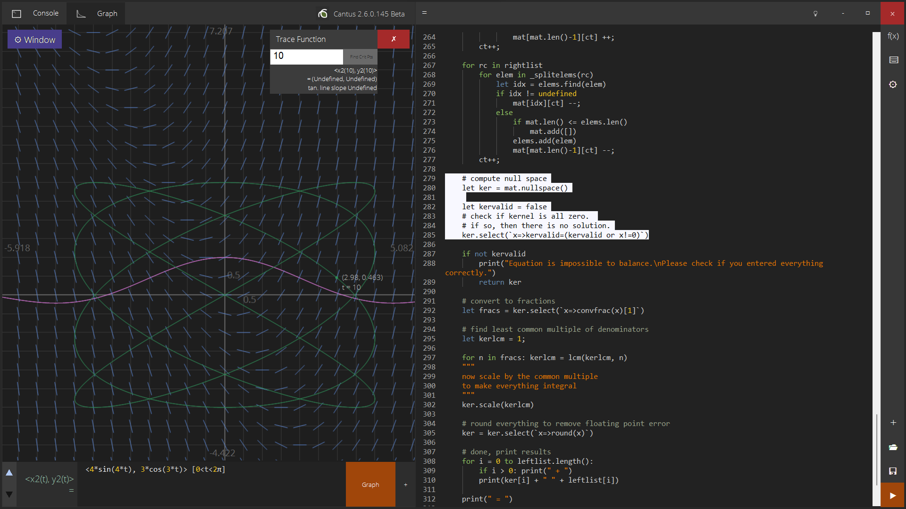
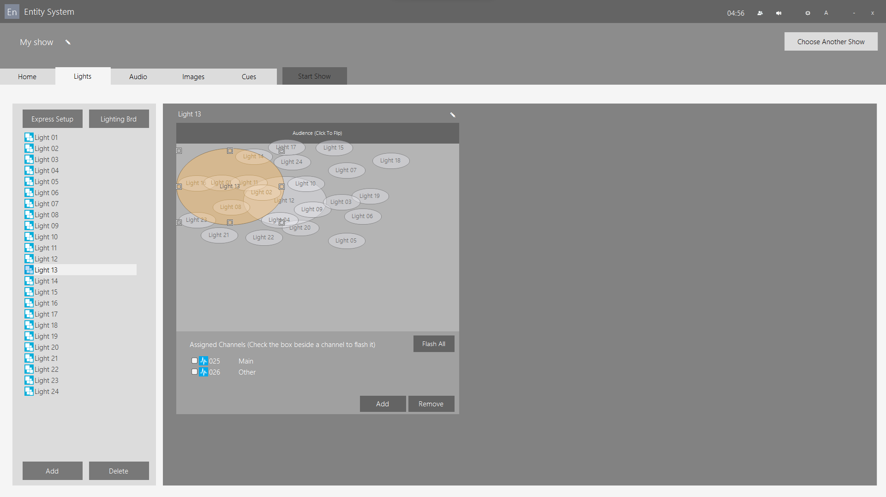

Personal Projects (High School)
Since I was young I have been passionate about create complex systems for various problems I encountered in life. I started off building various Flash games
such as mazes. Later, I learned to develop Windows applications and web apps as well.
-
Cantus
(github):
A Python-like programming language, graphing calculator, and IDE.
Named after Shinsekai Yori, one of my favorite animes

-
(github):
During high school I was responsible for lighting control backstage in the school theatre.
I developed a complicated system to visually control lights, audio, backdrop in the school theatre using DMX512 interfaces.
Also features ways to communicate between multiple backstage workers.

- Jiggly: a online multi-player jigsaw game for language learning. I demoed this in class and let everyone play together! (Image TODO)
- Harmony: a music transcription tool. First place in Startup Weekend Vancouver (Image TODO)
- OngakuBeats: a online music library and player (Image TODO)
Personal Projects (University)
During University I started to specialize more in 3D graphics and computer vision.
-
avatar (demo video):
a fast real-time system to fit smpl (human body) model to a point cloud in real time on a cpu, similar to smplify.
i trained a random-forest part segmentation system to segment the human point cloud using synthetic rendered data.
-
I won the hog contest, a class contest where you create a strategy which competes against the rest of the class, in Fall 2017 (my first semester), using dynamic programming in addition to some self-play system I made up, similar to evolutionary algorithms.
Later, I became a TA and ran the contest. Bacon2, a Python C++ extension, is a system for doing so very efficiently and updating status live.
Project page
-
Nivalis plotter
(funcplot.com):
an open-source graphing calculator written in C++, with both desktop and online (using emscripten/wasm) versions.
Github: nivalis
This is in some sense the successor of the Cantus project which I made in high school.
-
watplot is a fast interactive visualization system for SETI: Breakthrough Listen radio telescope data written in C++.
-
Berkeley SETI Open Data Archive, a modern web app for the public to access SETI data.
-
SMPL-X ++: SMPL-X, SMPL+H, SMPL implementation in C++ with built-in mesh visualizer.
Project page
-
Boolean Function Complexity Measures (link): an editable and interactive online Boolean function complexity measure table
-
Quaternion SRUKF is a modern C++ implementation of Square Root Unscented Kalman Filter with support for quaternion vectors.
-
Crowdy: 1st place in CS170 algorithms competition, a solver for graph partitioning problems
-
Transmitting text using sound: this was my final project in EE 126. I was able to get it to achieve a 200 bits-per-minute transmission rate with good robustness using frequeuency modulation, Reed-Solomon and Huffman coding, which was one of the best in the class.